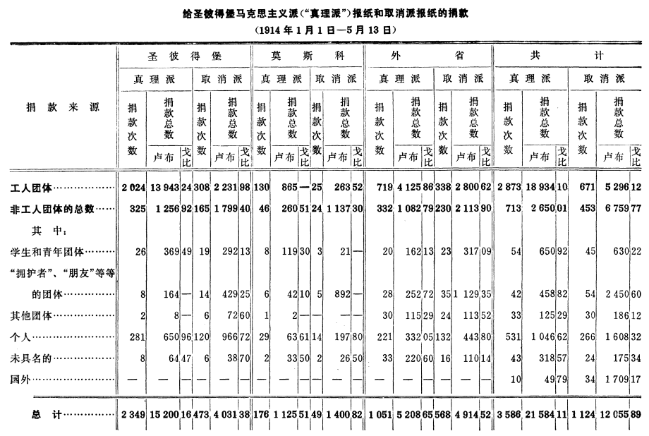

工人阶级和工人报刊（1914年6月13日和14日〔26日和27日〕）
工人阶级和工人报刊
（1914年6月13日和14日〔26日和27日〕）
对于觉悟的工人来说，再没有比了解和正确地认识工人运动的意义更为重要的任务了。工人运动的唯一的，也是不可战胜的力量源泉，就是工人的觉悟以及工人斗争的广泛性，也就是说，有大批雇佣工人参加这个斗争。
已经办了几年的圣彼得堡马克思主义报刊提供了唯一的、卓越的、无可替代的、经得起任何人检查的说明工人运动广泛性和哪种派别在工人运动中占优势的材料。只有那些想隐瞒真相的人才会象自由派和取消派那样回避这种材料。
说明1914年1月1日―5月13日给圣彼得堡“真理派”（马克思主义派）的报纸和取消派的报纸的捐款情形的完整材料，已经由维·亚·吉·同志整理出来了。现在我们把他编制的表格全部刊印出来，而在正文里，为了不让数字过分地麻烦读者，我们有时只引用整数。
这就是维·亚·吉·同志所编制的表格。

首先我们要谈谈工人团体的数目。这些数字是“真理派”和“取消派”报纸创刊以来的累积总数。工人团体的数目如下：
| | 支持真理派报纸的 | 支持取消派报纸的 |
| 1912年全年……………………………… | 620 |
89 |
| 1913年全年……………………………… | 2181 |
661 |
| 1914年1月1日―5月13日………… | 2873 |
671 |
| 共计………………… | 5674 | 1421 |
团体的总数是7095。当然，有些团体捐款不止一次，但是没有材料说明这样的团体究竟有多少。
我们看到，同情取消派的只占工人团体总数的1/5（五分之一）。“真理派”、真理派的决议和真理派的策略在两年半的期间内联合了俄国4/5有觉悟的工人。把这种工人统一的事实同“前进派”、“普列汉诺夫派”、“托洛茨基派”等各种知识分子小集团关于“统一”的空谈对照一下，是有益处的。
现在我们把1913年和1914年双方的数字比较一下（1912年的数字是无法比较的，因为《真理报》创办于4月，而《光线报》是5个月以后才出版的）。我们看到，真理派团体的数目增加了692个，即增加了31.7％，而取消派团体的数目只增加了10个，即增加了1.5％。可见，工人愿意支持真理派报纸的这种趋势的发展要比愿意支持取消派报纸的快20倍。
我们再来看看这两个派别的工人在整个俄国分布的情况：
| | 工人团体所占的百分数 |
| | 真理派 | 取消派 |
| 在圣彼得堡…………………………………… | 86％ |
14％ |
| 在莫斯科……………………………………… | 83％ |
17％ |
| 在外省………………………………………… | 68％ |
32％ |
结论很清楚：工人群众愈成熟，他们的觉悟和政治积极性愈高，真理派在他们中的优势就愈显著。在彼得堡取消派几乎完全被排挤掉了（100个里有14个）；在外省，因为那里的群众对政治最不了解，取消派还能够勉勉强强维持一点场面（100个里有32个）。
指出下面一点是极有意义的：来源完全不同的另一个材料，也就是受工人委托选举保险机关的代表成分的材料，同关于工人团体的材料异常接近。参加首都保险会议选举的受托人有37名是真理派，7名是取消派，分别占84％和16％。真理派受托人占总数的70％（53名中有37名），在选举全俄保险机关的57名受托人中有47名真理派，即占82％。取消派、非党人士和民粹派，也就是仍然受资产阶级影响的工人只占极少数。
下面，请看看关于工人团体捐款的平均数的有趣材料吧：
| | 工人团体捐款的平均数 |
| | 真理派 | 取消派 |
| 在圣彼得堡…………………………… | 6卢布88戈比 |
7卢布24戈比 |
| 在莫斯科……………………………… | 6卢布65戈比 |
10卢布54戈比 |
| 在外省………………………………… | 5卢布74戈比 |
8卢布28戈比 |
真理派团体向我们表明了一个自然的、合乎情理的、可以说是正常的现象：随着工人群众平均工资的提高，工人团体捐款的平均数也相应提高。
在取消派方面，除莫斯科团体（捐款只有25次！）的平均数跳得特别高以外，我们还看到，外省团体的捐款平均数也高于彼得堡团体的！！！怎样才能解释这种奇怪的现象呢？
只有花大力气对材料进行更仔细的整理，才能对这个问题作出可靠的答案。我们设想的答案是这样的：取消派所联合的是某些工业阶层中的少数工资最高的工人。在全世界都可以看到，这类工人最顽固地坚持自由主义和机会主义的思想。在我国的彼得堡，容忍取消派时间最长的是印刷工人，直到最近这次（1914年4月27日）印刷工会选举，真理派才争取到在理事会理事名单中占半数，在候补理事中占多数。各国的印刷工人都是最倾向于机会主义的，有几类印刷工人的工资最高。
如果说我们关于同情取消派的是少数工人贵族的论断只是一种设想，那么个人捐款情况却是不容置疑的。在非工人的捐款中有一半以上是个人捐款（我们这里是713次中有531次，取消派那里是453次中有266次）。我们这类捐款的平均数是1卢布97戈比；取消派是6卢布5戈比！！
很显然，捐款给真理派的是下级职员、公务员等等具有半无产者性质的小资产阶级分子。而在取消派方面，我们看到的是资产阶级阔朋友。
至于“拥护者、友人等等团体”这些资产阶级阔朋友们，我们就看得尤为清楚了。这些团体给了我们458卢布82戈比，即占捐款总数的2％；而且一个团体的平均捐款是10卢布92戈比，只相当于工人团体的平均捐款的一倍半。这些团体给了取消派2450卢布60戈比，即占捐款总数的20％以上；而一个团体的平均捐款是45卢布39戈比，即等于工人团体的平均捐款的6倍！！
我们再把国外捐款加进去，国外捐款主要是来自资产阶级大学生。国外给我们的捐款是49卢布79戈比，即占0.25％弱，给取消派的捐款是1709卢布17戈比，即占14％。
把个人的、“拥护者、友人”的以及国外的捐款加在一起，这些方面来的捐款总数为：
真理派1555卢布23戈比，即占全部捐款的7％。
取消派5768卢布零9戈比，即占全部捐款的48％。
在我们这一方面，这类捐款不到工人团体捐款（18934卢布）的1/10，在取消派方面却超过了工人团体的捐款（5296卢布）！！
结论很清楚：取消派的报纸不是工人的报纸，而是资产阶级的报纸。它主要是靠资产阶级阔朋友的钱来维持的。
取消派依赖资产阶级，实际上要比我们的材料所表明的厉害得多。因为真理派的报纸曾经多次公布自己的财务报表，从这些报表上可以看出，收入加上捐款，报纸的收支是相抵的。尽管报纸不断遭到没收，广告也不多，但发行量达4万份（1914年5月的平均数字），收支相抵是不难理解的。而取消派只公布过一次（《光线报》第101号）他们的报表，这张报表上有4000卢布的赤字，以后就转而采取资产阶级的习惯做法，不再公布报表了。在发行量为15000份的情况下，他们的报纸出现赤字是不可避免的，很显然，接连的亏空是靠资产阶级阔朋友来填补的。
自由派工人政治家喜欢暗示要“公开的工人政党”，但是他们不愿向真正的工人公开他们对资产阶级的真正的依赖性！我们这些地下工作者只好来教育教育取消派自由派分子，让他们知道公开报表的好处……
根据总计，工人和非工人捐款的比例是这样的：
| 捐款： | 在给报纸捐款的每个卢布中： |
| | 真理派 | 取消派 |
| 来自工人的占………………………………… | 87戈比 |
44戈比 |
| 不是来自工人的占…………………………… | 13戈比 |
56戈比 |
| 共计…………………… | 1卢布00戈比 | 1卢布00戈比 |
真理派得到的帮助，有17来自资产阶级，而且，正如我们所看到的，是来自资产阶级中民主派色彩最浓、富裕程度最低的阶层。取消派的报社主要是资产阶级的报社，还有少数的工人跟着它走。
捐款来源的材料也向我们表明了购买报纸的读者的阶级地位。
只有最自觉地同情报纸方针的固定读者才会自愿地给报纸捐款。而办报方针不管办报人是否愿意都得“适应”报纸读者中的最“有影响的”阶层。
从我们的材料可以得出下列结论：一是理论结论，即促进工人阶级认识工人运动条件的结论；二是实践结论，即为我们的工作提供直接指示的结论。
有时听人说，俄国有两种工人报刊，甚至普列汉诺夫不久前也重复过这种话。但这不符合实际。说这种话的人或者暴露出自己完全无知，或者暴露出自己暗中打算帮助取消派散布资产阶级对工人的影响。党的决议早已不止一次地（例如在1908年和1910年）明确直率地指出取消主义的资产阶级性质。在马克思主义报刊的文章中，已经把这个真理解释过几百次了。
公开面向群众的日报的经验必然揭露取消派的真正的阶级性质。这种经验已经揭露出了取消派的阶级性质。取消派的报社实际上是领导着少数工人的资产阶级报社。
除此以外，我们也不应忘记，取消派的报纸几乎直到1914年春天以前还是八月联盟的机关报。拉脱维亚人现在刚脱离了八月联盟，托洛茨基、艾姆－艾尔、阿恩、布里扬诺夫、叶戈罗夫也已经脱离或者正在脱离取消派；联盟还在继续瓦解。在最近的将来，取消派的资产阶级性质以及前进派、普列汉诺夫派、托洛茨基派等知识分子小集团的毫无生命力必然会暴露得更清楚。
实践的结论可以归纳为下面几点：
（1）真理派在不到两年半的期间团结了5674个工人团体，这个数字在俄国这样艰难的条件下是相当可观的。但这还只是开始。我们需要的不是几千个而是几万个工人团体。必须以十倍的努力来进行工作。从几百个工人那里一个戈比、一个戈比地收集得来的10卢布，无论就思想意义来说，或者就组织意义来说，都要比从资产阶级阔朋友那里得到的100卢布更重要，更宝贵。即使从财务方面来看，经验也会迫使人们承认，靠工人的戈比可以办成一份经久不衰的工人报纸，而靠资产阶级的卢布却办不成。取消派的报社是一个势必破灭、行将破灭的肥皂泡。
（2）我们在外省特别落后，那里有百分之三十二的工人团体还跟着取消派走！！一切有觉悟的工人必须全力以赴结束这种可悲而又可耻的现象。必须竭尽全力把外省的工作抓紧。
（3）看来，运动几乎还完全没有触动农村工人。不管农村的工作多么困难，都必须最顽强、最坚决地进行这项工作。
（4）就象母亲细心地照顾生病的孩子、增加他的营养那样，觉悟的工人必须更加细心地照顾感染上取消主义毛病的工人所在的那些地区和工厂。在年轻的工人运动中出现这种从资产阶级那里来的毛病是不可避免的，但是在正确的护理和不断的治疗之下，病是会痊愈的，不会给工人留下终生的特别有害的后遗症。
更加热心地用马克思主义的读物来给有毛病的工人增加营养，——更加细心、更加通俗地解释党的历史和策略，解释党的关于取消主义的资产阶级性质的决议的意义，——更加详尽地说明无产阶级统一的绝对必要性，也就是少数工人必须服从多数，俄国1/5有觉悟的工人必须服从4/5觉悟的工人。这就是我们最重要的任务之一。
载于1914年6月13日和14日《劳动的真理报》第14号和第15号
译自《列宁全集》俄文第5版第25卷第227―234页
|